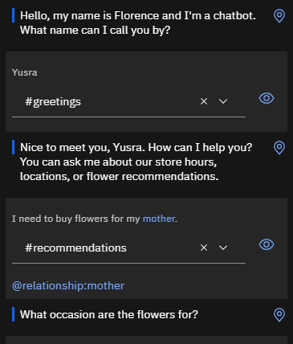
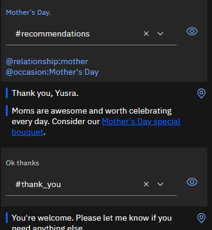
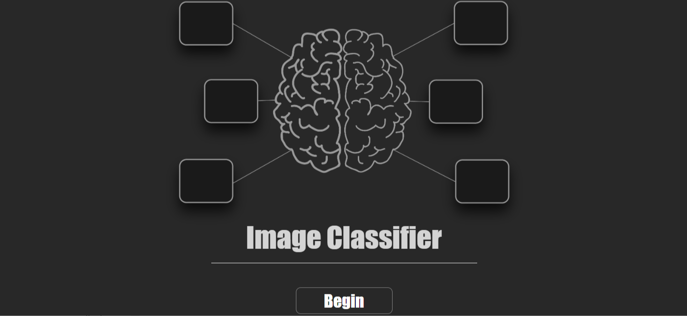
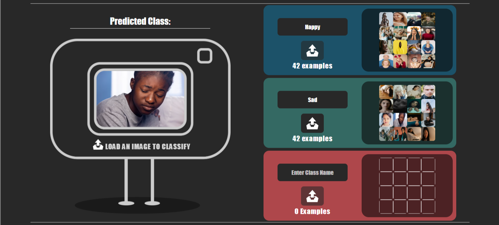
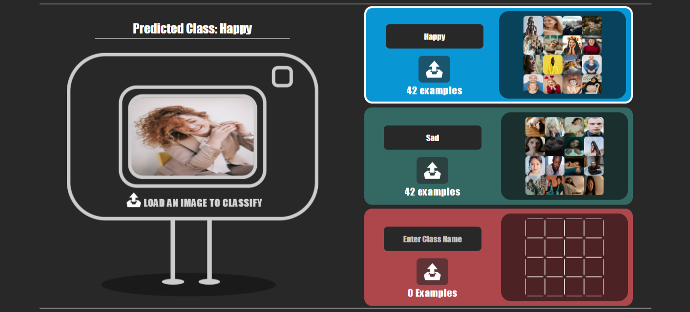
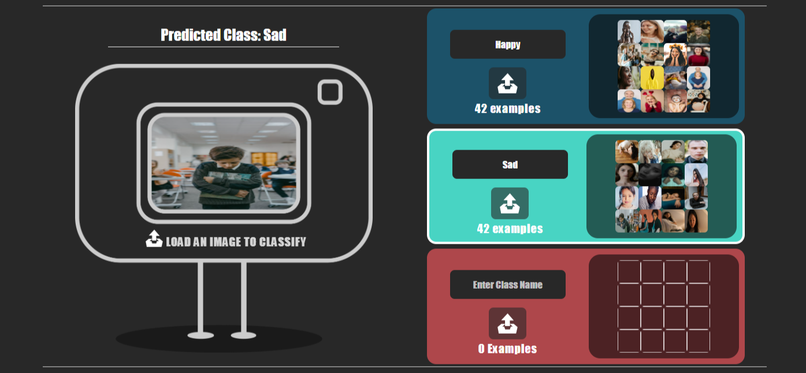

About
My journey in the world of web development began during my undergraduate studies in
computer science, where I honed my coding skills and developed a strong foundation in
programming languages such as HTML, CSS, JavaScript, and more. Over the years, I've had the
opportunity to work on a wide range of projects, from e-commerce platforms to interactive web
applications, allowing me to refine my problem-solving abilities and adapt to evolving
technologies. My passion for web development goes beyond the technical aspects; I'm also deeply committed to creating user-centered designs that enhance the overall user experience. My dedication to staying current with the latest industry trends, coupled with my ability to collaborate effectively in cross-functional teams, has enabled me to consistently deliver high-quality, results-driven solutions. I'm excited to bring my expertise to your projects and help you achieve your digital goals.
Outside of the world of web development, my interests are as diverse as my skill set. I like listening to music which helps me relax.I find solace in the pages of a good book. I like doing indoor activities like crafting and designing. I also enjoy watching documentries and videos on camping. They not only put my mind to ease but also allow me to enjoy my own company. These varied interests not only enrich my life but also inspire creativity in my work, allowing me to approach web development with a fresh perspective and a well-rounded outlook.
My educational background includes Matriculation and Intermediate followed by my
Bachelors degree in Computer Science.I also did some short courses in the fields of AI and
Machine Learning. My educational background really paved the way for me and helped me tune
into the person I am today. It helped me find my creative side and find my true passion. It provided me the
foundation of diving into the realm of technology and advancement.It provided the intellectual framework
necessary to adapt to rapidly evolving technologies and tackle complex challenges with confidence.
The combination of formal education and practical experience has been instrumental in shaping me
into a proficient and adaptable web developer, ready to take on diverse projects and deliver exceptional
results.
My skillset as a web developer encompasses a wide range of tools and technologies. I have expertise
in front-end development, including HTML, CSS, and JavaScript, allowing me to create responsive and visually
appealing user interfaces. On the back end, I'm proficient in server-side scripting languages like PHP and
Python, as well as database management with SQL. I'm also proficient in languages like C, C++ and Java.
Additionally, I have a keen eye for design principles and usability, ensuring that the websites and
applications I create offer exceptional user experiences. My skillset is constantly evolving,
as I stay up-to-date with the latest industry trends and best practices to deliver cutting-edge solutions.
My work experience includes:
Web Developer at TechSolutions Inc.
June 2020 - Present
As a Web Developer at TechSolutions Inc., I've been responsible for creating and maintaining dynamic websites and web applications that drive business growth. I collaborated closely with our design and marketing teams to ensure seamless user experiences. My role included optimizing site performance, implementing responsive designs, and continuously enhancing user interfaces. I also played a key role in troubleshooting technical issues and providing innovative solutions to meet our clients' diverse needs.
Front-end Developer at Digital Innovators Agency
May 2018 - June 2020
During my time as a Front-end Developer at Digital Innovators Agency, I contributed to the development of visually engaging and user-friendly websites for a wide range of clients. I had the opportunity to work on various projects, from e-commerce platforms to interactive landing pages. My responsibilities involved translating design mockups into pixel-perfect web pages, implementing responsive layouts, and ensuring cross-browser compatibility. I also actively participated in client meetings, offering technical insights and recommendations to achieve project objectives.
These fictional work experiences showcase my expertise and contributions as a web developer in different organizations. Feel free to adapt them to your own experiences and organizations as needed.
Portfolio
Project Title: E-commerce Website
Project Title: AI Powered Chatbot Without Programming
Project Description
As the number of social media apps is increasing and more businesses are shifting online, we
need a mechanism to provide customer service 24/7. A human agent might be suitable for assisting
however, for every small and repeated query, contacting an agent and waiting for the response seems
unefficient. This is where Chatbots come in handy. Deploying a chatbot in one's site
can provide room for answering simple and most frequently asked queries without having to wait for a
human agent to do so. The project revolves around creating an AI Powered Chatbot for a flower
shop to answer simple queries without the use of any programming. The project aims at improving the
quality of customer service.
Technology Used
The project revoles around the use of IBM Watson Assitant for creating
and deploying the chatbot to a WordPress site. I used the its features to create a simple chatbot. Below
is a picture of how the chatbot would normally operate.



Project Title: Mood Recognition with Machine Learning
Project Description
The project revolves around training an Image Classifier in a way
that it can distinguish between Happy and Sad faces. For this purpose, I first collected dataset
in the form of pictures from different Internet resources for both the classes i.e. Happy and
Sad. The dataset consisted of both the training and testing data. I then used the training data
to train my modal and then lastly I tested it with the already collected dataset.
Technology Used
To train the modal, I used an Image Classifier

Next, I trained the modal by creating two classes and adding training data to both of them.

Finally, to test the modal, I uploaded pictures of both classes one by one and as expected,
the classifier classified them correctly (see screenshots below).

